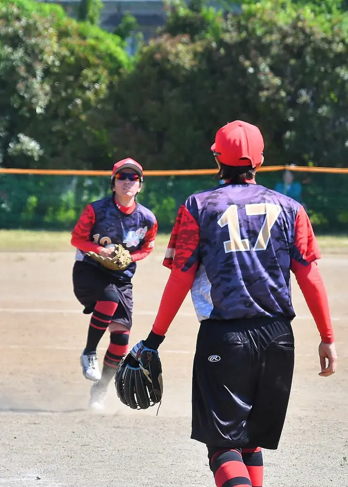
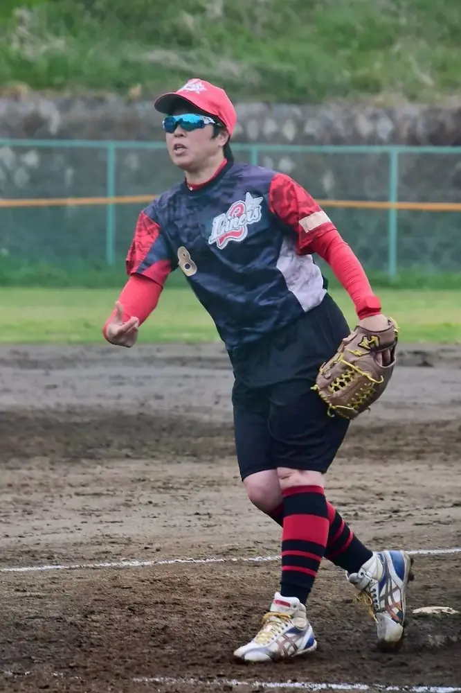
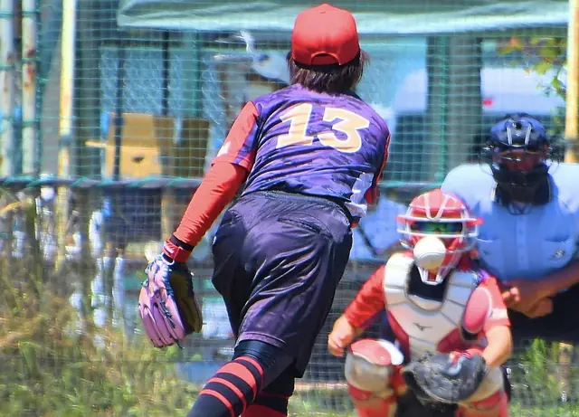
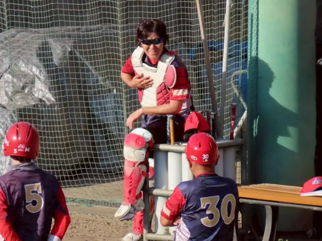
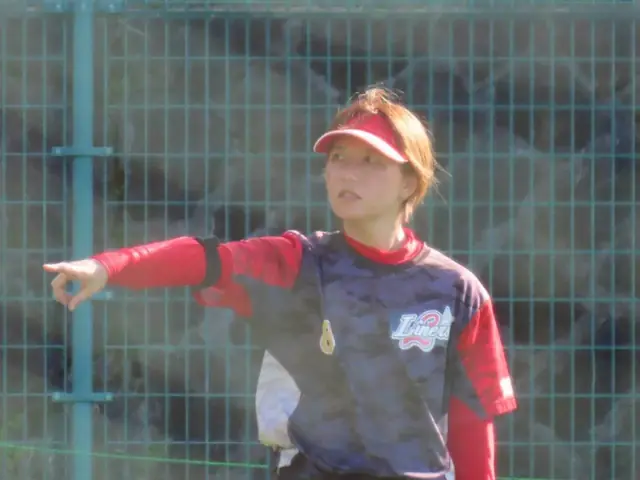

ELDER SOFTBALL
エルダー
ソフトボールとは




ABOUT ELDER
好きなソフトボールを、
いつまでも。
ソフトボールのエルダーとは、35歳以上の女性を対象とした生涯スポーツのカテゴリー（および全国大会）です。
エルダーカテゴリーの概要
このカテゴリーは、日本ソフトボール協会（カテゴリーの説明・別タブで開きます）が定める生涯スポーツの区分です。
- 参加資格
- 同一の都道府県内に居住または勤務する、35歳以上（その年の4月1日現在）の女子選手で構成されたチーム。
- 使用球
- ゴムボールを使用
- 背景
- 昔の「家庭婦人」や「ママさん」と呼ばれていた区分を、年齢層に合わせて整理・再編して作られたカテゴリー。15歳以上対象の「レディース」や、さらに上の年齢層（50歳以上）を対象とする「エルデスト」などと分かれている。
大会への参加資格・年齢条件は、
各大会の最新の開催要項をご確認ください。
横浜市港北区のライナーズで、
ソフトボールを楽しみませんか？
ライナーズ（LINERS）は、神奈川県横浜市港北区を中心に活動するレディース／エルダーソフトボールチームです。
経験やブランクを問わず、見学・体験を歓迎しています。参加をご希望の方は、InstagramのDMからお気軽にお問い合わせください。
\ チームメンバー募集中！ /
お問い合わせはこちら！